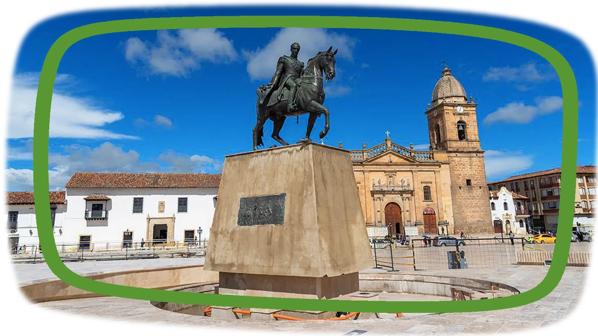
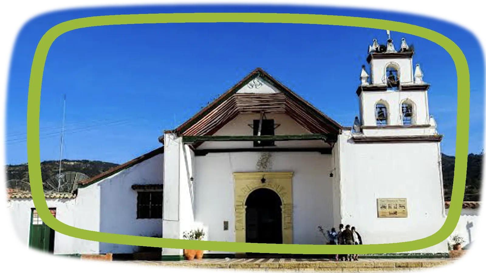
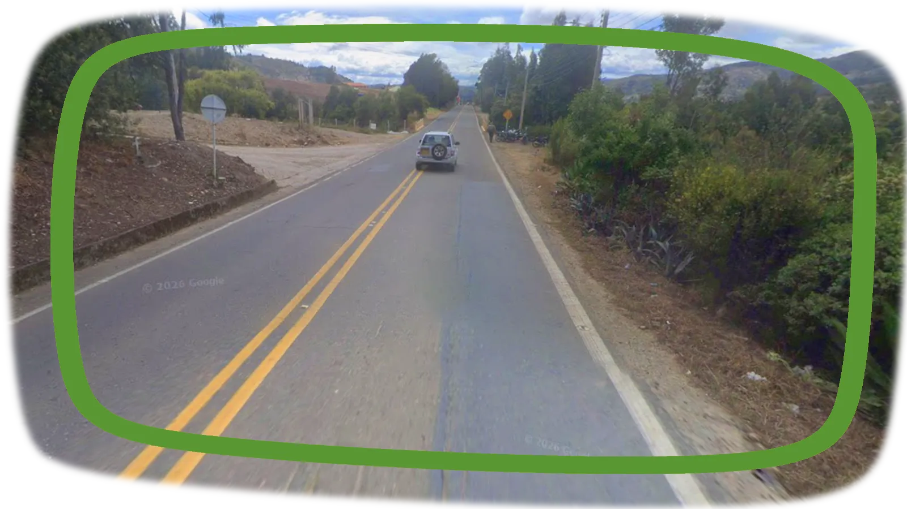
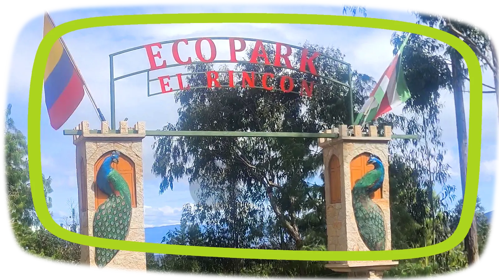

Cómo llegar
DE BOGOTÁ
AL RINCÓN
Te mostramos el camino.
¿CÓMO VIENES?

01 PEAJE DE LOS ANDES

02 PLAZA DE BOLÍVAR TUNJA

03 PARROQUIA DE SANTA LUCÍA

04 VÍA VEREDA PIJAOS

05 PARQUE ECOLÓGICO EL RINCÓN
BOGOTÁ
Toma la Autopista Norte (Ruta 55) en dirección a Tunja (Boyacá). Es una vía en buen estado y con paisaje montañoso.
130 Km
2 Horas 30 min
TUNJA
Continúa por la Ruta 55 en dirección a Villa de Leyva. Sigue las indicaciones hacia el municipio de Cucaita.
17 Km
30 min
CUCAITA
Al llegar a Cucaita puedes tomarte un respiro y visitar su Parque principal e iglesia. Cuando estés listo para continuar, toma la vía que conduce hacia la vereda Lluviosos.
1 Km
2 min
VÍA VEREDA PIJAOS
Estás a punto de llegar al Rincón. La montaña y los árboles te dan la bienvenida.
2 Km
5 min
EL RINCÓN
Has llegado al Parque Ecológico El Rincón. Estamos agradecidos por habernos seleccionado. Esperamos que tu experiencia sea inolvidable.

01 TERMINAL DEL NORTE BOGOTÁ

02 TERMINAL JUANA VELASCO DE GALLO

03 PUERTA PRINCIPAL CUCAITA BOYACÁ
04 VÍA VEREDA PIJAOS
05 PARQUE ECOLÓGICO EL RINCÓN
BOGOTÁ
Tu recorrido comienza en el Terminal de transporte del Norte o en en el Terminal Salitre. Compra un tiquete de bus con destino al Terminal de transporte de Tunja (Boyacá).
130 Km
2 Horas 30 min
TUNJA
Llegaste al terminal de Transporte de Tunja. Puedes disfrutar de un café en sus instalaciones y, cuando estés listo para continuar, busca la compañía que vende tiquetes de bus hacia Cucaita, Boyacá. También te sirven buses con ruta hacia Villa de Leyva, Samacá o Sáchica. siempre que no vayan por el sector La Cumbre.. Pregunta antes de comprar el tiquete.
17 Km
30 min
CUCAITA
Bájate en Cucaita, Boyacá. Si no conoces el lugar exacto, puedes preguntarle al conductor dónde debes bajar. Aquí puedes visitar el Parque principal y la iglesia antes de continuar tu recorrido.
VÍA VEREDA PIJAOS
Desde este punto tienes dos opciones para llegar
al Parque Ecológico El Rincón:
(A) Contratar un vehículo que te lleve los aproximadamente 3 km hasta la puerta del parque.
(B) Caminar aproximadamente 3 km desde la vía principal hasta la puertas del parque.
*** Si decides caminar, ten en cuenta que son aproximadamente 3 km por la vía hasta llegar al parque.
3 Km
25 min
EL RINCÓN
Llegaste al Parque Ecológico El Rincón. Estamos agradecidos por habernos seleccionado. Esperamos que tu experiencia sea inolvidable.